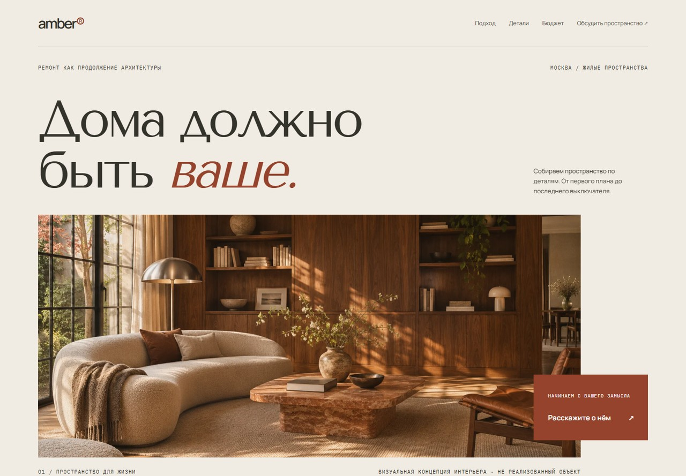
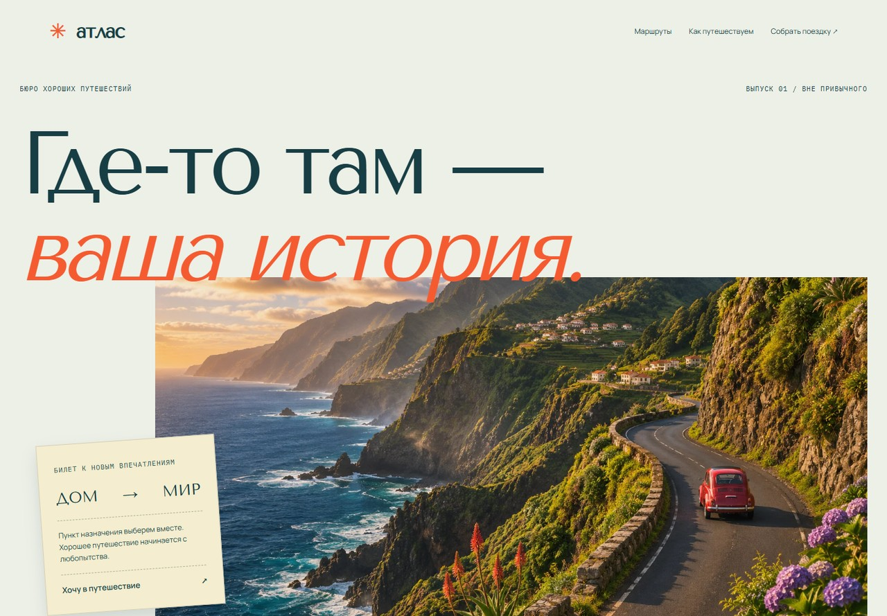
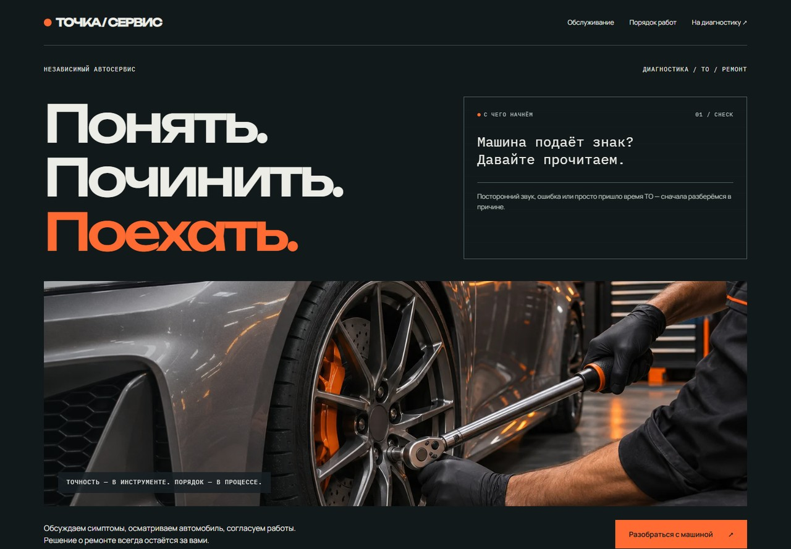

AMBER ↗
4 СТРАНИЦЫ / Услуги · Интерьеры · Этапы ремонта
Архитектурная композиция, интерьерный кадр, палитра материалов и интерактивный ориентир бюджета ремонта.
Новая серия демонстрационных сайтов по четыре страницы: собственная композиция, характер и интерактивные сценарии у каждого проекта. Нажмите на работу, чтобы открыть сайт.

4 СТРАНИЦЫ / Услуги · Интерьеры · Этапы ремонта
Архитектурная композиция, интерьерный кадр, палитра материалов и интерактивный ориентир бюджета ремонта.

4 СТРАНИЦЫ / Направления · Маршрут · Как всё устроено
Дорожный дневник: выразительная типографика, билет и переключение маршрутов по настроению.

4 СТРАНИЦЫ / Услуги · Подбор стрижки · Перед визитом
Афишная типографика, документальный портрет, интерактивное меню услуг и демонстрационная запись.

4 СТРАНИЦЫ / Виды уборки · Что входит · Калькулятор
Светлая интерьерная композиция, интерактивный список уборки по комнатам и выбор услуги.

4 СТРАНИЦЫ / Услуги · Плановое ТО · Диагностика
Интерфейс в духе приборной панели, конфигуратор обслуживания и расчёт выбранных работ.